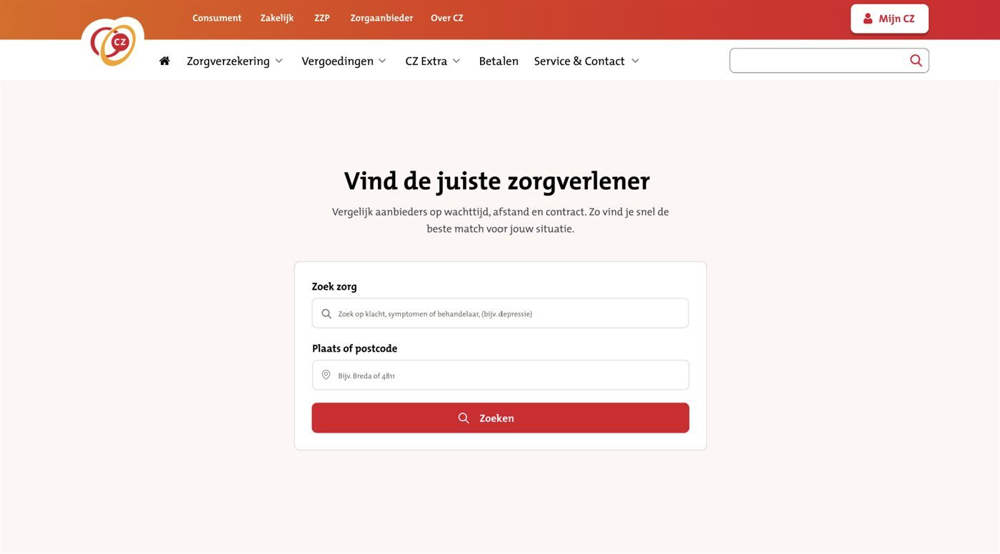

Research
Audience research, outreach to potential participants and professionals, and project documentation.
01 / Client project · UX/UI
In a five-person team, I focused on UX research, interface design and prototyping for a clearer healthcare-search experience. We presented the concept at CZ headquarters in Tilburg.
Concept work; no production implementation is claimed.

Research direction
The project research highlighted friction around search terms, filters, provider context and comparison.
The work / interactive prototype
Select a stage to inspect the authentic team prototype. Unverified provider details remain masked.
01 / Search
Search by care need and location, with suggested terms.
CZ branding and prototype imagery are shown with permission.
02 / Results
Explore filters for contract, distance, waiting time, specialisation and digital options. Sample provider data is masked.
03 / Provider
A detail view brings together care, language and service information. Identifying and unverified details are masked.
04 / Compare
Compare care, distance, waiting time and service details side by side. Provider values are masked.
My contribution / outcome
Audience research, outreach to potential participants and professionals, and project documentation.
Interface and prototype work were developed collaboratively by our five-person team.
Presented at CZ headquarters in Tilburg. The project report records feedback from four testers.
Tester feedback identified filter visibility, waiting-time context and navigation clarity as areas to improve; it is not a broader usability result.
Unverified provider information remains masked. No production implementation is claimed.